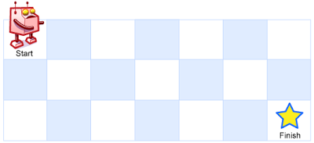

leetcode热题100官方题解 - 4
动态规划
通过动态规划，可以将部分需要算出最优解或种类问题转化为一个个小问题，自底向上不断迭代，最终获得最优解。
如果一个问题，可以把所有可能的答案穷举出来，并且穷举出来后，发现存在重叠子问题，就可以考虑使用动态规划。
爬楼梯
假设你正在爬楼梯。需要 n 阶你才能到达楼顶。
每次你可以爬 1 或 2 个台阶。你有多少种不同的方法可以爬到楼顶呢？
示例：
输入：n = 3
输出：3
解释：有三种方法可以爬到楼顶。
1. 1 阶 + 1 阶 + 1 阶
2. 1 阶 + 2 阶
3. 2 阶 + 1 阶
首先，需要列出动态规划的规律式子。我们发现当$x>2$时，跨越台阶的数目为
$$
f(x)=f(x-1)+f(x-2)
$$
即爬到第$x$级台阶的方案数是爬到第$x−1$级台阶的方案数和爬到第$x−2$级台阶的方案数的和。
然后需要列出动态规划的边界条件。我们发现$x=0$或$x=1$时不适用以上式子，因此边界条件就是这两个地方，需要特别处理。
最后呈现出来的代码是这样
1 | |
当然题解使用三个整数来替代数组的作用，省了点空间。
1 | |
杨辉三角
给定一个非负整数 numRows，生成「杨辉三角」的前 numRows 行。

示例:
输入: numRows = 5
输出: [[1],[1,1],[1,2,1],[1,3,3,1],[1,4,6,4,1]]
规律写得比较清楚了，$row > 2$是其边界条件。
于是容易获得代码
1 | |
打家劫舍
你是一个专业的小偷，计划偷窃沿街的房屋。每间房内都藏有一定的现金，影响你偷窃的唯一制约因素就是相邻的房屋装有相互连通的防盗系统，如果两间相邻的房屋在同一晚上被小偷闯入，系统会自动报警。
给定一个代表每个房屋存放金额的非负整数数组，计算你 不触动警报装置的情况下 ，一夜之内能够偷窃到的最高金额。
示例：
输入：[1,2,3,1]
输出：4
解释：偷窃 1 号房屋 (金额 = 1) ，然后偷窃 3 号房屋 (金额 = 3)。偷窃到的最高金额 = 1 + 3 = 4 。
边界条件为$k>2$。现在考虑规律。
遇到第$k$间房屋时，若偷窃，则不能偷窃第$k-1$间房屋，金额之和为第$k-2$间和第$k$间的和。若不偷，总金额为前$k-1$间的最高金额。
总公式为
$$
\begin{cases}
\text{dp[0]=nums[0]} \\
\text{dp[1]=max(nums[0],nums[1])} \\
\text{dp[i]=max(dp[i-2] + nums[i],dp[i-1])}
\end{cases}
$$
真的不用想太多，有时候情况就是这么简单
1 | |
完全平方数
给你一个整数 n ，返回 和为 n 的完全平方数的最少数量 。
完全平方数 是一个整数，其值等于另一个整数的平方；换句话说，其值等于一个整数自乘的积。例如，1、4、9 和 16 都是完全平方数，而 3 和 11 不是。
示例：
输入：n = 12
输出：3
解释：12 = 4 + 4 + 4
绞尽脑汁找规律，最后果断找题解
数必然在区间$[1,\sqrt{i}]$内，因此可以一个个枚举，设当前枚举到$j$，那么原问题就变成了找$i-j^2$的最小平方数。于是可以写出状态转移方程
$$
f[i]=1+\min^{\lfloor \sqrt{i} \rfloor}_{j=1}f[i-j^2]
$$
该公式中，1表示当前正在遍历的$j$，$\lfloor \sqrt{i} \rfloor$表示对所求数$i$取根号的向下取整，表示上限。
或者展开成这个形式
$$
f[i]=1+\min {f[i-1^2],f[i-2^2],\cdots,f[i-j^2],\cdots,f[i-k^2]},\quad k=\lfloor \sqrt{i} \rfloor,\quad 1\leq j<k
$$
其中的$f[i-j^2]$可以通过查数组获得。
最后形式如下
1 | |
零钱兑换
给你一个整数数组 coins ，表示不同面额的硬币；以及一个整数 amount ，表示总金额。
计算并返回可以凑成总金额所需的 最少的硬币个数 。如果没有任何一种硬币组合能组成总金额，返回 -1 。
你可以认为每种硬币的数量是无限的。
示例：
输入：coins = [1, 2, 5], amount = 11
输出：3
解释：11 = 5 + 5 + 1
当作爬楼梯，将硬币数当作不同的阶，然后检查某阶能不能由更低阶直接爬上来
1 | |
题解的动态规划是这样的
1 | |
该代码相比我写的快了1ms，主要在于省去了排序部分（毕竟全部都遍历了一遍），由$O(n\log n)$减少到了$O(n)$，还有省去了一大堆条件讨论（可能？）。
单词拆分
给你一个字符串 s 和一个字符串列表 wordDict 作为字典。如果可以利用字典中出现的一个或多个单词拼接出 s 则返回 true。
示例：
输入: s = "catsandog", wordDict = ["cats", "dog", "sand", "and", "cat"]
输出: false
本地的状态转移解释如下
对于字符串leetcode，wordDict=["leet","code"]
i |
substring | dp |
|---|---|---|
| 0 | “” | dp[0]=true |
| 1 | “l” | dp[1]=false |
| 2 | “le” | dp[2]=false |
| 3 | “lee” | dp[3]=false |
| 4 | “leet” | dp[4]=true |
| 5 | “leetc” “c” | dp[5]=false |
| 6 | “leetco” “co” | dp[6]=false |
| 7 | “leetcod” “cod” | dp[7]=false |
| 8 | “leetcode” “code” | dp[8]=true |
最后一个为true，于是最后返回的也是true。
状态转移方程为
$$
dp[i]=dp[j] \&\& \text{check(s[j … i-1])}
$$
其中$\text{check(s[j … i-1])}$表示子串是否出现在字典中。
1 | |
最长递增子序列
给你一个整数数组 nums ，找到其中最长严格递增子序列的长度。
子序列 是由数组派生而来的序列，删除（或不删除）数组中的元素而不改变其余元素的顺序。例如，[3,6,2,7] 是数组 [0,3,1,6,2,2,7] 的子序列。
实例：
输入：nums = [10,9,2,5,3,7,101,18]
输出：4
解释：最长递增子序列是 [2,3,7,101]，因此长度为 4 。
动态规划
定义dp[i]为考虑前$i$个元素，以第$i$个数字结尾的最长上升子序列的长度（其中第$i$个数字必须被选取。
从小到大计算dp数组的值，既然是序列，那么状态转移方程可以是
$$
\text{dp[i]=max(dp[j])+1,其中0≤j<i且num[j]<num[i]}
$$
最后，整个数组的最长上升子序列即所有dp[i]中的最大值。
1 | |
贪心 + 二分查找
上面方法的时间复杂度为$O(n^2)$，而这个方法的时间复杂度可缩减至$O(n\log n)$
考虑贪心算法，既然我们要上升子序列尽可能长，那么就需要让序列上升尽可能慢。于是我们维护一个数组d[i]，其中d[1]=nums[0]，维护整数值len，表示最长的长度。
若nums[i] > d[len]，则直接加入到数组的末尾，并更新len++。
否则，在数组中二分查找。找到第一个比nums[i]小的数d[k]，并更新d[k+1] = nums[i]。
其中的查找不是唯一的，重要的是找到以第一个比nums[i]小的数。
1 | |
乘积最大子数组
给你一个整数数组 nums ，请你找出数组中乘积最大的非空连续 子数组（该子数组中至少包含一个数字），并返回该子数组所对应的乘积。
测试用例的答案是一个 32-位 整数。
示例：
输入: nums = [2,3,-2,4]
输出: 6
解释: 子数组 [2,3] 有最大乘积 6。
这题拿一个dp数组看似简单实则很难，负数位置情况特别复杂。不信自己拿两个指针试试。
使用$f_{max}(i)$表示以第$i$个元素结尾的乘积最大子数组的乘积，$a$表示参数nums，那么状态转移方程就是$f_{max}(i)=\max ^n_{i=1}{f(i-1)\times a_i,\ a_i} $
吗？
并不是，因为前一个的最大值乘数不一定可以应用于下一个最大值的乘数，所以并不满足所谓的“最优子结构”。需要另外考虑。
我们可以根据正负性进行分类讨论。我们另外维护一个最小乘积，希望这个积尽可能“负得更多”，于是有
$$
f_{max}=\max ^n_{i=1}{f_{max}(i-1)\times a_i,\quad f_{min}(i-1)\times a_i,\quad a_i }\\
f_{min}=\min ^n_{i=1}{f_{max}(i-1)\times a_i,\quad f_{min}(i-1)\times a_i,\quad a_i }
$$
不难发现，此处的第$i$个状态都与第$i-1$个状态有关，所以也可以不用数组了。于是最后的代码为
1 | |
分割等和子集
给你一个 只包含正整数 的 非空 数组 nums 。请你判断是否可以将这个数组分割成两个子集，使得两个子集的元素和相等。
示例：
输入：nums = [1,5,11,5]
输出：true
解释：数组可以分割成 [1, 5, 5] 和 [11]
把该问题进行转化，就是找选取的物品总量不超过数组和的一半，就是“0-1背包问题”。
首先进行判断。若数组长度为1或数组和为奇数，则直接返回false。然后创建二维数组dp，包含n行target + 1列，其中dp[i][j]表示从数组的[0,i]下标范围内选取若干个正整数，是否存在一种方案，使得选取的正整数之和等于j。
边界条件为
- $\text{dp[i][0] = true}$（不选取任何数）
- $\text{dp[0][num[0]]}$（只有下标0能选）
状态转移方程为
$$
\text{dp[i][j]}=\begin{cases}
\text{dp[i-1][j] || dp[i-1][j-nums[i]]},\quad \text{j}\geq \text{nums[i]} \\
\text{dp[i-1][j]},\quad \text{j}\leq \text{nums[i]}
\end{cases}
$$
- 若
j这个和大于当前数字num[i]那么可以选取也可以不选取，两种情况有一个为true时为真- 若不选取，
dp[i][j]=dp[i-1][j] - 选取了，
dp[i][j]=dp[i-1][j-nums[i]]
- 若不选取，
- 若
j小于当前数字，直接跳过，因此有dp[i][j]=dp[i-1][j] - 最终
dp[n-1][target]就是答案
dp[i][j]表示从数组的前i个元素中选取若干个正整数，是否存在一种方案，使得他们的和等于j。
在第一种情况中，若不选当前元素（dp[i][j]=dp[i-1][j]）也不影响为true，或选了就需要前面所有元素凑出差值（dp[i][j]=dp[i-1][j-nums[i]]），那么就是true
由于每一行的dp值都只与上一行的dp值有关，因此可以降低数组量。此时的转移方程为
$$
\text{dp[j]=dp[j] || dp[j-nums[i]]}
$$
且需要注意的是第二层的循环我们需要从大到小计算，因为如果我们从小到大更新 dp 值，那么在计算 dp[j] 值的时候，dp[j−nums[i]] 已经是被更新过的状态，不再是上一行的 dp 值。
1 | |
最长有效括号
给你一个只包含 '(' 和 ')' 的字符串，找出最长有效（格式正确且连续）括号 子串 的长度。
左右括号匹配，即每个左括号都有对应的右括号将其闭合的字符串是格式正确的，比如 "(()())"。
示例：
输入：s = "(()"
输出：2
解释：最长有效括号子串是 "()"
假如是判断括号是否有效，那么碰到不匹配的直接返回就可以了，但这题要求长度，就复杂了很多。
动态规划
设置dp数组。我们在从前到后遍历dp值时，我们每两个字符检查一次
- 字符串形如 “…..()”，可以推出
$$
dp[i]=dp[i-2]+2
$$ - 字符串形如”…..))”，并假设
s[i-dp[i-1]-1]='('可以推出
$$
dp[i]=dp[i-1]+dp[i-dp[i-1]-2]+2
$$
考虑倒数第二个 ‘)’ 是一个有效字符串的一部分，对于最后一个 ‘)’，如果他是一个更长子串的一部分，那么和第一个 ‘)’ 配对的 ‘(‘ 前面一位一定有对应的 ‘(‘。若符合这种情况，就用2加上子串长度（dp[i-2]）去更新dp[i]。同时，把有效子串之前的有效长度也加上，也就是再加上dp[i-dp[i-1]-2]。
1 | |
栈
维护一个栈
- 遇到的每个 ‘(‘ 都将其下标放入栈中。
- 遇到的每个 ‘)’ 都先弹出栈顶元素，表示匹配的当前括号
- 栈为空时，我们将其下标放入栈中，更新“最后一个没有被匹配到的右括号的下标”
- 栈不为空时，当前右括号下标减去栈顶元素纪委“以该右括号为结尾的最长有效括号的长度”
- 长度为遍历到的节点下标与栈顶元素的差。
注意，在一开始时，第一个字符为左括号时，不满足“最后一个没有被匹配到的右括号的下标”，因此需要先放入-1。
1 | |
比动态规划好懂
不需要额外空间
利用两个计时器left right，从左到右遍历字符串。遇到 ‘(‘ 时增加 left，遇到 ‘)’ 时增加 right。
left == right: 计算当前有效字符串长度left < right: 两个计数器同时变为0
但这种还忽略了 “(()” 的情况，因此还需要反过来再遍历一遍，遵循
left == right: 计算当前有效字符串长度left > right: 两个计数器同时变为0
1 | |
多维动态规划
不同路径
一个机器人位于一个 m x n 网格的左上角 （起始点在下图中标记为 “Start” ）。
机器人每次只能向下或者向右移动一步。机器人试图达到网格的右下角（在下图中标记为 “Finish” ）。
问总共有多少条不同的路径？
示例：

输入：m = 3, n = 7
输出：28
有了上一题二位降到一维的经验，这题也是有手就行
1 | |
可以自己试着列出从第一行开始，不断向下的动态规划图。
| 1 | 1 | 1 | 1 | 1 | 1 | 1 |
| 1 | 2 | 3 | 4 | 5 | 6 | 7 |
| 1 | 3 | 6 | 10 | 15 | 21 | 28 |
看出规律后进行相加即可。
或者使用数学公式。我们需要移动$m+n-2$次，其中向下移动$m-1$次，向右移动$n-1$次，两种移动方式进行排列，有
$$
C^{m-1}{m+n-2}= \frac{\displaystyle{\prod^{m+n-2}{i=1}i}}{(m-1)!}=\frac{(m+n-2)!}{(m-1)!(n-1)!}
$$
（代码略）
最小路径和
给定一个包含非负整数的 m x n 网格 grid ，请找出一条从左上角到右下角的路径，使得路径上的数字总和为最小。
说明：每次只能向下或者向右移动一步。
示例：
输入：grid = [[1,3,1],[1,5,1],[4,2,1]]
输出：7
解释：因为路径 1→3→1→1→1 的总和最小
我觉得我又行了
1 | |
某一个格子的最小路径和等于上方/左边的最小值加上自己的路径，以此类推即可。
最长回文子串
给你一个字符串 s，找到 s 中最长的 回文子串。
示例 1：
输入：s = “babad”
输出：”bab”
解释：”aba” 同样是符合题意的答案。
示例 2：
输入：s = “cbbd”
输出：”bb”
动态规划
对于一个子串，若它是回文串，且长度大于2，那么将它首尾两端的两个字母出去后，它仍然是个回文串。
我们可以用$P(i,j)$表示字符串$s$的第$i$到$j$个字母组成的串，
$$
P(i,j)=\begin{cases}
\text{true}, 若子串S_i\cdots S_j是回文串\\
\text{false}, 其他情况
\end{cases}
$$
“其他情况”有两种
- $i>j$
- $s[i,j]$不是回文串
那么容易有
$$
P(i,j)=P(i+1, j-1) \text{and} (S_i == S_j)
$$
对于长度为2的子串，只要它的两个字母相同，它也是一个回文串，此时边界条件为
$$
\begin{cases}
P(i,i)=\text{true}\\
P(i,i+1)=(S_i==S_{i+1})
\end{cases}
$$
最后返回所有$P(i,j)$中$j-i+1$的最大值。
1 | |
中心扩展算法
回看状态转移方程
$$
\begin{cases}
P(i,i)=\text{true}\\
P(i,i+1)=(S_i==S_{i+1})\\
P(i,j)=P(i+1, j-1) \text{and} (S_i == S_j)
\end{cases}
$$
所有状态在转移的时候的可能性都是唯一的，我们可以从每一种边界情况开始扩展，也可以得出所有的状态对应的答案。
枚举每一种边界情况，并向两边扩展。若两边的字母相同，我们就可以继续扩展；若两边字母不同就停止扩展。
1 | |
最长公共子序列
给定两个字符串 text1 和 text2，返回这两个字符串的最长 公共子序列 的长度。如果不存在 公共子序列 ，返回 0 。
一个字符串的 子序列 是指这样一个新的字符串：它是由原字符串在不改变字符的相对顺序的情况下删除某些字符（也可以不删除任何字符）后组成的新字符串。
例如，"ace" 是 "abcde" 的子序列，但 "aec" 不是 "abcde" 的子序列。
两个字符串的 公共子序列 是这两个字符串所共同拥有的子序列。
示例：
输入：text1 = "abcde", text2 = "ace"
输出：3
解释：最长公共子序列是 "ace" ，它的长度为 3 。
假设字符串$text_1$和$text_2$的长度分别为$m$和$n$，创建$m+1$行$n+1$列的二维数组dp，其中dp[i][j]表示$text_1[0:i]$和$text_2[0:j]$的最长公共序列长度。
边界情况如下
- $i=0$时，固定
dp[0][j]=0，因为空字符串与任何字符串的最长公共序列的长度都是0 - $j=0$同理
二者都大于0时
- $text_1[i-1] = text_2[j-1]$时，取二者的最长公共子序列再增加一个字符
- 若不相等，取$text_1[0:i-1]$和$[0:j-1]$的最长公共子序列的最大值
于是有
$$
dp[i][j]=\begin{cases}
dp[i-1][j-1]+1,\quad text_1[i-1]=text_2[j-1]\\
\max (dp[i-1][j],dp[i][j-1]),\quad text_1[i-1]\neq text_2[j-1]
\end{cases}
$$
最终的dp[m][n]就是二者的最长公共子序列长度
1 | |
编辑距离
给你两个单词 word1 和 word2， 请返回将 word1 转换成 word2 所使用的最少操作数。
你可以对一个单词进行如下三种操作：
- 插入一个字符
- 删除一个字符
- 替换一个字符
示例 1：
输入：word1 = “horse”, word2 = “ros”
输出：3
解释：
horse -> rorse (将 ‘h’ 替换为 ‘r’)
rorse -> rose (删除 ‘r’)
rose -> ros (删除 ‘e’)
示例 2：
输入：word1 = “intention”, word2 = “execution”
输出：5
解释：
intention -> inention (删除 ‘t’)
inention -> enention (将 ‘i’ 替换为 ‘e’)
enention -> exention (将 ‘n’ 替换为 ‘x’)
exention -> exection (将 ‘n’ 替换为 ‘c’)
exection -> execution (插入 ‘u’)
最难的题往往只需要最简单的题干。看第一个示例想着搞一个dp二维数组就行的，第二个示例直接放弃了。后面看示例2应该也可以继续搞，然后面对sea eat没有了办法。
题目中可以对两个单词都进行操作，但简单起见不进行删除操作（容易证明这样和有了删除操作后依然是等价的），并且插入或者修改操作只在末尾进行（这也是能等价的）。
对于插入和修改操作，可以等价为各种dp情况
dp[i][j-1]或dp[i-1][j]，在其中一个字符串插入一个相同的字符dp[i-1][j-1]，对于word2的第j个字符，我们修改word1的第i个字符使他们相同。
1 | |